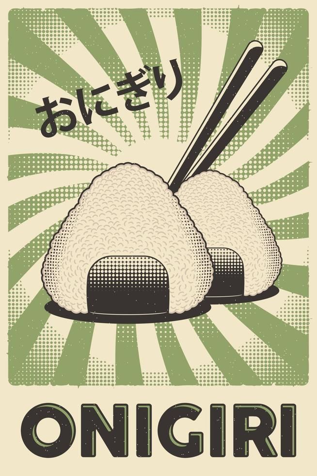

TUNA MAYO ONIGIRI
 Onigiri is a popular and convenient snack or light meal in Japan.
It is a portable food that can be easily carried and eaten without
the need for utensils. Many people enjoy onigiri as a quick and satisfying option
for lunch or a snack. It is also a common item found in Japanese convenience stores.
Ingredients
- Rice
- Nori sheets
- Spicy Mayo
- Canned Tuna
Steps
-
the filling mixing drain cooked tuna with the Kelly Loves Spicy Mayo.
Rince the rice 3 times and leave it to soak in water for 30min then drain it.
Then cook the rice in yuor favourite manner.
You can use 150g of raw rice to get approx 450 of cooked rice.
You will need to add to your rice cooker pan 250ml of water.-
Prepare a bowl of water and humidify your hands to prevent the rice from sticking.
-
Take approx. 100g of rice and form a sort of ball,
press the center to make space to place the filling. Close the ball and shape with your hand to make a triangle shape. That being said,
they are several methods to make onigiri,
even mold so you can do it with the method of your choice.